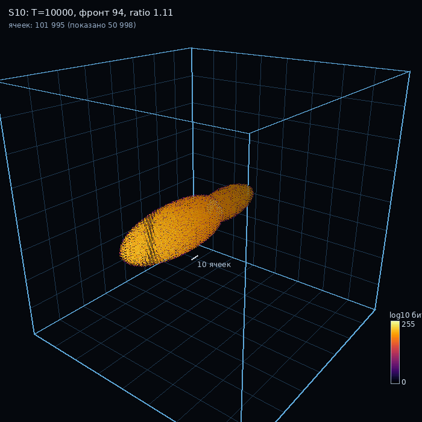
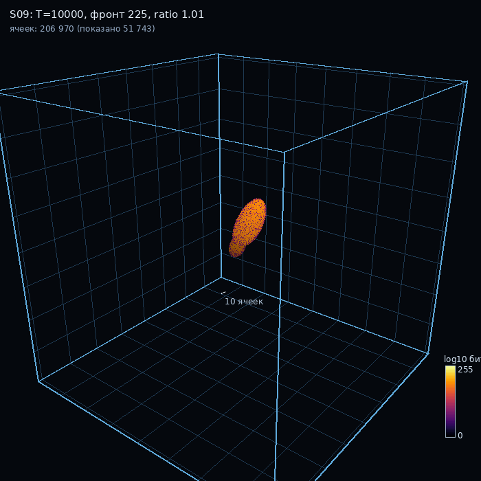
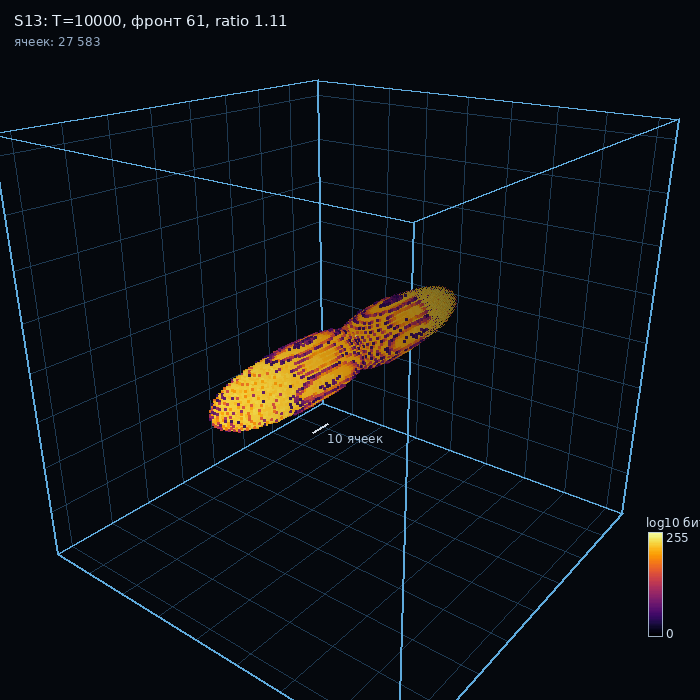

N=1 000 000 бит, T=10 000, локальный C-CA, куб L=30 001. Перебирались attr/rep/bias/noise/mob и асимметрия заряда. Критерий: фронт и число активных клеток должны продолжать расти к T=10 000, а не выходить на плато к 5 000.
Клетка хранит p и n; за такт только активные клетки делят биты по шести направлениям. Веса: 1 + attr·(n_d−p_d) + rep·(p−p_d) + bias·b_d + noise·ξ; mobility — доля движущихся бит. Зародыш — одна клетка.
| ID | mode | attr | rep | bias | noise | mob | f | front5 | front10 | ratio | active | blob | net |
|---|---|---|---|---|---|---|---|---|---|---|---|---|---|
S10 | 0 | 0.00 | 0.50 | 0.20 | 0.80 | 20 | 0.800 | 85 | 94 | 1.11 | 101 995 | 0.45 | 0.05 |
S13 | 0 | 0.00 | 0.00 | 0.50 | 0.80 | 5 | 0.500 | 55 | 61 | 1.11 | 27 583 | 0.41 | 0.09 |
S05 | 0 | 0.50 | 0.00 | 0.20 | 0.80 | 20 | 0.500 | 71 | 78 | 1.10 | 102 866 | 0.45 | 0.05 |
S12 | 1 | 2.00 | 2.00 | 0.00 | 0.80 | 20 | 0.800 | 24 | 25 | 1.05 | 63 786 | 0.97 | 0.05 |
S00 | 1 | 1.00 | 1.00 | 0.20 | 0.50 | 20 | 0.800 | 101 | 104 | 1.03 | 78 710 | 0.43 | 0.06 |
S03 | 1 | 2.00 | 0.50 | 0.20 | 0.50 | 20 | 0.800 | 101 | 104 | 1.03 | 78 696 | 0.43 | 0.06 |
S02 | 1 | 0.50 | 2.00 | 0.20 | 0.50 | 20 | 0.800 | 101 | 104 | 1.03 | 78 688 | 0.43 | 0.06 |
S01 | 0 | 0.00 | 0.00 | 0.00 | 0.50 | 20 | 0.500 | 19 | 20 | 1.03 | 30 422 | 0.96 | 0.06 |
S07 | 0 | 0.00 | 1.00 | 0.20 | 0.30 | 50 | 0.500 | 98 | 100 | 1.02 | 157 621 | 0.44 | 0.05 |
E4 | 0 | -2.00 | 2.00 | 0.00 | 0.50 | 50 | 0.500 | 27 | 27 | 1.02 | 79 154 | 0.97 | 0.04 |
E3 | 0 | -2.00 | -2.00 | 0.00 | 0.50 | 50 | 0.500 | 27 | 27 | 1.02 | 78 861 | 0.97 | 0.04 |
S09 | 1 | 2.00 | 2.00 | 0.50 | 0.30 | 50 | 0.800 | 223 | 225 | 1.01 | 206 970 | 0.39 | 0.09 |
S04 | 0 | 0.00 | 2.00 | 0.20 | 0.30 | 20 | 0.800 | 77 | 78 | 1.01 | 60 086 | 0.45 | 0.06 |
N2 | 1 | 0.00 | 0.30 | 50 | 0.800 | 29 | 29 | 1.01 | 96 987 | 0.97 | 0.02 | ||
N1 | 1 | 0.00 | 0.30 | 50 | 0.800 | 29 | 29 | 1.01 | 96 953 | 0.97 | 0.02 | ||
S08 | 1 | 0.00 | 0.50 | 0.50 | 0.00 | 50 | 0.500 | 168 | 168 | 1.00 | 173 907 | 0.4 | 0.07 |
S06 | 1 | 0.00 | 2.00 | 0.50 | 0.80 | 20 | 0.800 | 142 | 143 | 1.00 | 95 554 | 0.41 | 0.07 |
S11 | 0 | 2.00 | 1.00 | 0.50 | 0.00 | 20 | 0.800 | 107 | 107 | 1.00 | 60 643 | 0.42 | 0.07 |
S14 | 0 | 0.00 | 2.00 | 0.50 | 0.00 | 5 | 0.800 | 56 | 56 | 1.00 | 14 836 | 0.4 | 0.1 |
S15 | 1 | 2.00 | 0.00 | 0.20 | 0.00 | 5 | 0.500 | 32 | 32 | 1.00 | 11 107 | 0.45 | 0.1 |
E1 | 0 | 0.00 | 5.00 | 0.00 | 0.00 | 100 | 0.500 | 31 | 31 | 1.00 | 120 713 | 0.39 | 0.02 |
p притягивается к n, а n отталкивается от p (и наоборот): AP ≠ AN. Проверено 6 конфигураций.
| ID | AP | AN | front5 | front10 | ratio | active |
|---|---|---|---|---|---|---|
N1 | 2.00 | -2.00 | 29 | 29 | 1.01 | 96 953 |
N2 | 2.00 | -1.00 | 29 | 29 | 1.01 | 96 987 |
N3 | 1.00 | -2.00 | 165 | 0 | — | 0 |
N4 | 2.00 | -2.00 | 31 | 32 | 1.02 | 123 178 |
N5 | 0.00 | 0.00 | 29 | 29 | 1.01 | 96 989 |
N6 | 2.00 | -2.00 | 202 | 206 | 1.02 | 256 492 |
| ID | front5 | front10 | fr | active5 | active10 | ar |
|---|---|---|---|---|---|---|
E1 | 31 | 31 | 1.00 | 120 713 | 120 713 | 1.00 |
E2 | 31 | 0 | — | 120 713 | 0 | — |
E3 | 27 | 27 | 1.02 | 74 272 | 78 861 | 1.06 |
E4 | 27 | 27 | 1.02 | 75 044 | 79 154 | 1.05 |
E5 | 0 | 0 | — | 0 | 0 | — |
E6 | 194 | 194 | 1.00 | 341 431 | 341 431 | 1.00 |
E7 | 40 | 41 | 1.03 | 232 559 | 253 845 | 1.09 |



| Проверка | Статус | Значение |
|---|---|---|
| 21 правило прогнано | PASS | 21 |
| T=10 000 | PASS | 10000 |
| N=1 000 000 | PASS | 1000000 |
| лучший продолжающийся рост >1.05 | PASS | S10 1.11 |
| сильное разворачивание >1.25 | FAIL | max 1.11 |
| картинки созданы | PASS | 3 |
| невзаимные правила: ни одно не растёт >1.25 | FAIL | N6 1.02; N3 не завершён |
| хотя бы одно правило с active_ratio>1.25 | PASS | E7 1.29 |
| структурное разворачивание front_ratio>1.25 | FAIL | max 1.11 |
Часть 5: локальный CA. C-версия 16 млн: ca3d5_c.html.